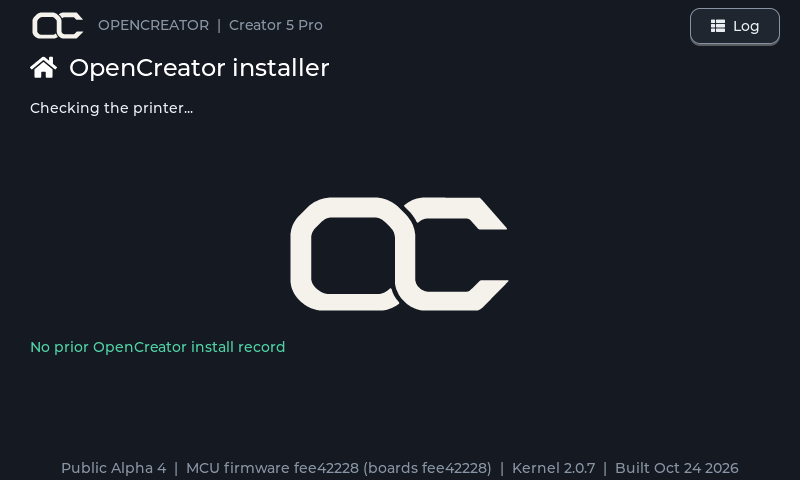
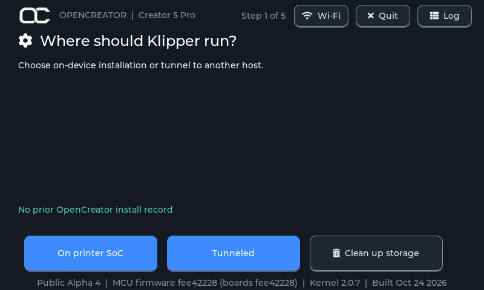
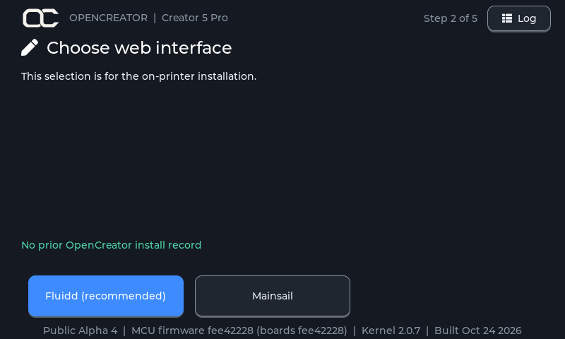
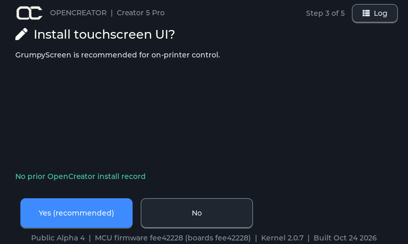
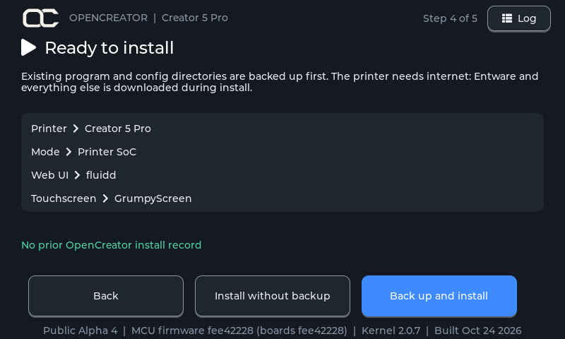
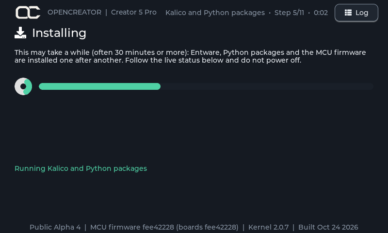

OpenCreator Installer¶
The OpenCreator Installer is a touchscreen app that runs on the Creator 5's own
screen. It walks you through installing OpenCreator CFW from a USB drive: on the
printer itself, or tunneled to a Raspberry Pi / SBC. It backs everything up
first, so you can go back. Its source is the opencreator-installer
repository.
Download¶
The installer is part of each OpenCreator release; use the latest one. Extract the zip to the root of a FAT32 USB drive, then follow Steps to install OpenCreator.
What you need¶
- A Creator 5 or Creator 5 Pro on FlashForge firmware (1.9.9 recommended)
- A USB drive that meets the requirements
- Internet on the printer (Entware, Kalico, Moonraker and the web UIs are downloaded during install)
- For tunnel mode: an SBC, see OpenCreator for SBC
- A printer that has at least 200MB on the prog partition and 1gb of storage on the data partition
How it goes¶
flowchart TD
A[Check printer model<br/>and kernel package] --> B{Supported?}
B -->|no| S[Stop: nothing is changed]
B -->|yes| E{Where should<br/>Klipper run?}
E -->|On printer SoC| F[Choose Fluidd or Mainsail]
F --> G[Install GrumpyScreen?]
E -->|Tunneled| G
G --> H[Ready to install:<br/>summary]
H --> I[Back up, then install]
I --> J[Reboot]- Checking. The installer reads the printer model and FlashForge kernel package. The printer's root filesystem is not changed; everything is installed next to the stock software. The bottom of the screen shows the installer version, the MCU firmware on the drive (and what the boards last got, if OpenCreator flashed them before), the kernel package and the build date.













Already installed¶
If the printer already has OpenCreator from the same installer version, the installer opens on OpenCreator is up to date:

- Update again re-runs the update with the current setup.
- Recovery runs the whole setup again, as above.
- Update Configs asks the same questions (where Klipper runs, web UI, touchscreen), then shows only what differs from the current setup and changes just that. For example, switching from On printer SoC to Tunneled only installs the bridge, and switching back only installs what SoC mode needs and isn't on the printer yet. Switching web UI changes which one the printer serves; turning the touchscreen off keeps GrumpyScreen on the printer but stops starting it. Nothing is backed up. Reboot afterwards.
- Restore backup and Rollback to stock show up when there's a backup or FlashForge's own firmwareExe to go back to.
Update available¶
With an older OpenCreator installed, it opens on Update available, which updates in place with the setup shown. Your configs and files are kept; OpenCreator files you changed are saved to the backup. Change setup asks the questions again.

No internet¶
Without internet, it lists the Wi-Fi networks it can see. Tap one and type its password on the screen's keyboard. Quit starts the printer normally.

Clean up storage¶
Every start page (first install, update, already installed, no internet, unsupported kernel) has Clean up storage. Its confirmation page warns that nothing can be brought back, and Yes, delete only works after a 10-second countdown. It deletes:

- every print file (
.gcode,.3mf,.stl),.mp4and log under/usr/dataand/usr/prog; - everything in
/usr/data/logs,/usr/data/update(FlashForge update downloads),/usr/data/opencreator/timelapse,/usr/data/opencreator/klipper/logsand the Entware caches; - other mods' leftovers (ZMOD, Anvil), old Moonraker copies, and the stock Klipper docs and man pages.
Git checkouts (Klipper, Moonraker, opencreator-fs and the rest), the stock firmware's own model files and the installer's backups are kept. It can't be undone, and OpenCreator takes no responsibility for anything it breaks or removes. Based on CleanFlashforgeCreator5Pro.
Supported kernel packages
Entware needs legacy NaN, which is switched on with one byte written at
an address that depends on the FlashForge kernel package
(/usr/prog/PROGRAM/kernel/): 0x00a130d1 for 2.0.1 to 2.0.6,
0x00B330D1 for 2.0.7 (FlashForge 1.9.9) and 0x00B030D1 for 2.0.8
(FlashForge 2.0.0). On any other package the
installer stops without changing anything.
What gets installed¶
| Step | What happens |
|---|---|
| Entware | The Entware package manager in /usr/data/bin/opt, with git, gcc, Python and Moonraker's build dependencies. |
| LoopScript | OpenCreator's startup system from opencreator-fs: it replaces FlashForge's firmwareExe (a copy of the original is kept) and starts everything below at boot. It also replaces the boot logo with the OpenCreator one (the original is backed up). |
| MCU firmware | Flashes all four boards (eBoard, heaterBoard, levelBoard, mainBoardGD) from the package on the USB drive, after checking its checksum. Skipped if the boards already run that firmware. |
| Klipper | Kalico with the OpenCreator printer config, including the first-time setup dialog and the OpenCreator Fluidd theme, in /usr/data/opencreator/klipper. A first install takes the printer's input shaper and hotend and bed PID tuning from FlashForge's config; a config you already have there is kept. |
| Moonraker | The latest Moonraker, replacing FlashForge's older one. Its update manager lists Kalico, Moonraker, Mainsail, Fluidd and opencreator (the OpenCreator configs). Updating opencreator merges the new config templates into yours within a minute, keeping your own edits. Restart Klipper afterwards to load them. |
| Web UI | The latest Mainsail and Fluidd; the printer's web page shows the one you chose. |
| Touchscreen | The latest GrumpyScreen release, if chosen. |
| Root login | Adds the root login opencreator (password FlashForge2026) for SSH. See Root login. |
| Step | What happens |
|---|---|
| Entware | The Entware package manager, with git, gcc and socat. |
| LoopScript | Same as SoC mode; in tunnel mode it starts the bridge instead of Klipper. |
| MCU firmware | Same as SoC mode. |
| Bridge | Installs the socat bridge and switches the printer's board to bridge-only mode, so it forwards the four boards to your SBC over USB. |
| Touchscreen | The latest GrumpyScreen release, if chosen. Point it at your SBC afterwards: set host under [moonraker] in /usr/data/grumpyscreen/grumpyscreen.cfg. |
| Root login | Same as SoC mode. |
| SBC | Not done by the installer: after rebooting the printer, run the SBC installer from OpenCreator for SBC. |
Root login¶
The installer adds a root login, so you can SSH into the printer:
| User | opencreator |
| Password | FlashForge2026 |
Change the password
Everyone who installs OpenCreator gets the same default password. To set your own, log in over SSH and run:
Type the new password twice. Running the installer again keeps the password you set.
Safety features¶
-
Model check
Only a Creator 5 (PID 0028) or Creator 5 Pro (PID 0029) on a supported kernel package is accepted. Otherwise installing is blocked.
-
Backup first
Before anything changes, FlashForge's
firmwareExe, Moonraker, theopencreatorfolder (Klipper and your config), the web UI folders and the nginx config are archived to the USB drive. -
Restore
If a backup exists, the installer offers Restore backup, also right after a failed install. Folders that did not exist before are removed again. MCU firmware is not rolled back, and Entware stays installed.
-
Preflight warnings
Warns when there is less than 256 MB free on the printer or the USB drive, or the backup folder is missing or read-only.
-
Log
The Log button shows everything the installer did. The same log is saved to the USB drive as
opencreator-installer.log. -
Demo install
Runs every step for real, but writes into a separate folder instead of the system, so you can see exactly what would change without touching the printer.
When the install finishes, it records what was installed (installer version,
model, mode, web UI, touchscreen, backup location and time) in
/usr/data/opencreator/install.json. The next run shows that as the previous
install.
Power
Do not power off the printer while the installer is running, especially during MCU flashing. A power loss there can leave the printer needing firmware recovery.